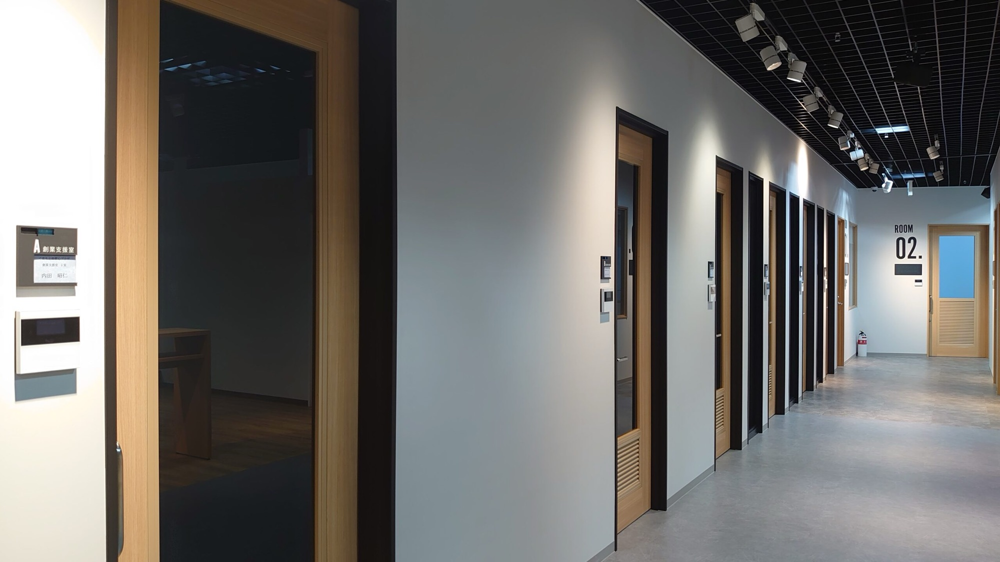

DEVELOPMENT
熊谷 洸介
Kousuke Kumagai
「技術を教えることで、
自分もまだまだ成長できると気づいた。」

Kousuke Kumagai
「技術を教えることで、
自分もまだまだ成長できると気づいた。」
INTERVIEW
フリーランス時代はフロントエンド専門で自由に働いていましたが、ひとりで完結する仕事に限界を感じていました。「チームで大きな価値を生み出したい」「責任ある役割を担いたい」という気持ちが強くなって、転職を決意しました。
Rise Tech Solutionsの創業者のビジョンに共感したこと、そして「入社後のキャリアパスが明確に描ける環境」があることが決め手でした。実際、入社からわずか数ヶ月でサブマネージャーを任せてもらえました。


数百人規模のプロジェクト内で、20名チームの動きを束ねる役割です。部署間の調整・メンバーのタスク進捗管理・会議への出席・議事録作成・アクション整理……一言でいうと「チームのための交通整理役」です。
技術だけでなく、「人・情報・タスク」を動かすスキルが必要で、フリーランス時代に培った俯瞰する力がここで活きています。
異業種から入ってきた研修生と1on1で向き合い、一人ひとりに合わせた学習計画を作っています。「わからない」を「わかる」に変える瞬間——研修生が自走できるようになったときの達成感は、自分の案件が終わったときとは別次元の喜びです。
教えることで自分の理解も深まるし、「あの時の自分はこのレベルだった」と振り返ることで成長実感も生まれる。講師の仕事は自分への最高の学習機会だと気づきました。


クライアントとの最初の相談から、要件定義・設計・開発・テスト・リリースまでを一気通貫で担えるフルスタックエンジニア兼PMになることが目標です。
「技術でお客様により大きな価値を届けたい」という思いは、フリーランス時代から変わっていません。RTS という組織の力を借りながら、個人では到達できなかったスケールに挑んでいるのが今です。
A DAY IN MY LIFE
業務開始・タスク棚卸し
メンバーへの連絡事項・議事録の確認・今日動かすべきタスクを整理。チームが止まらないように先手を打つのがルーティンです。
クライアントとの朝会
プロジェクト全体の進捗確認と課題共有。ここで出た指示を自チームに落とし込む橋渡しが重要なミッションです。
チームメンバー個別進捗確認
20名のメンバーのタスク状況をSlack・Jiraで確認。詰まっている人がいれば即サポートに入ります。
昼休憩
研修生と一緒にランチすることも多い。雑談の中から「実は詰まってました」という話が出てきたりして、1on1よりリラックスした本音が聞けます。
社内研修 1on1セッション
研修生と個別に向き合い、進捗確認・技術Q&A・学習計画の調整。「わかった！」という瞬間が毎日どこかにあって、これがやみつきになります。
部署間調整・議事録作成・翌日準備
午前の会議内容を整理し、関係部署への共有や翌日のアクションを整備。「抜け漏れゼロ」が自分のこだわりです。
技術学習（バックエンド・PM知識）
Node.js・Go・クラウドアーキテクチャを独学中。マネジメントだけでなく技術の引き出しを増やすことが、チームへの最大の貢献だと思っています。
業務終了
残業はほとんどなし。帰りにジムで頭をリセットするのが日課。オンオフの切り替えがこの仕事を長く続けるコツだと思っています。
CAREER PATH
フリーランス時代
Webフロントエンドエンジニア
フリーランスとしてReact/Vue.jsを中心に案件をこなす。自由な働き方を得る一方、「チームで大きな仕事をしたい」という渇望が膨らんでいった。
入社〜3ヶ月
プロジェクト参画・即戦力として活躍
入社直後から大型プロジェクトにアサイン。フリーランス時代のスキルを活かしながら、チーム開発のスタイルに素早く適応。
入社後半年
サブマネージャー 兼 社内講師に昇格
20名チームのマネジメントを任される。同時に社内研修の講師も兼任し、技術と教育の両輪で動く独自のポジションを確立。
現在〜
フルスタック × PM を目指して
バックエンド・クラウドを独学で習得中。クライアント相談からリリースまでを一人で完結させる"オールラウンドエンジニア"への道を歩んでいる。